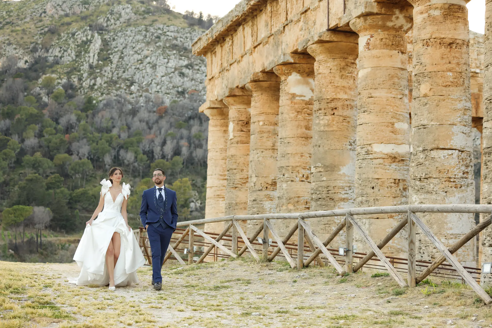
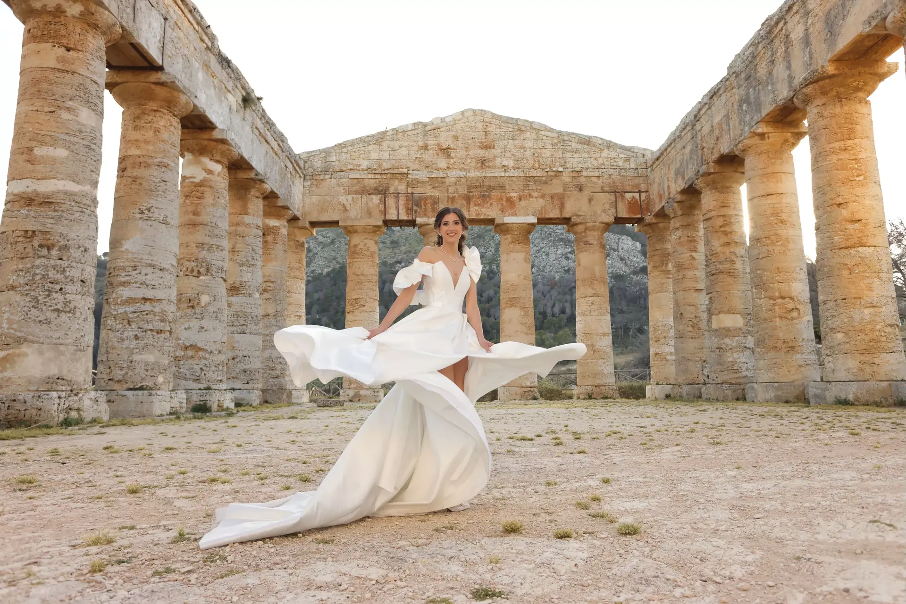
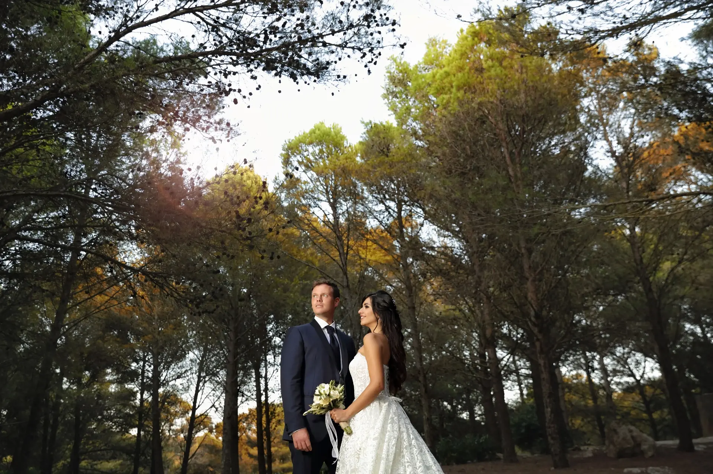
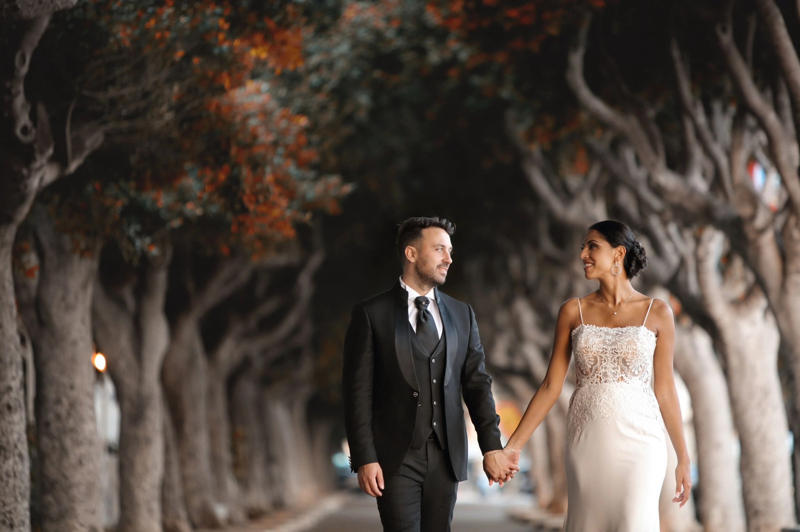
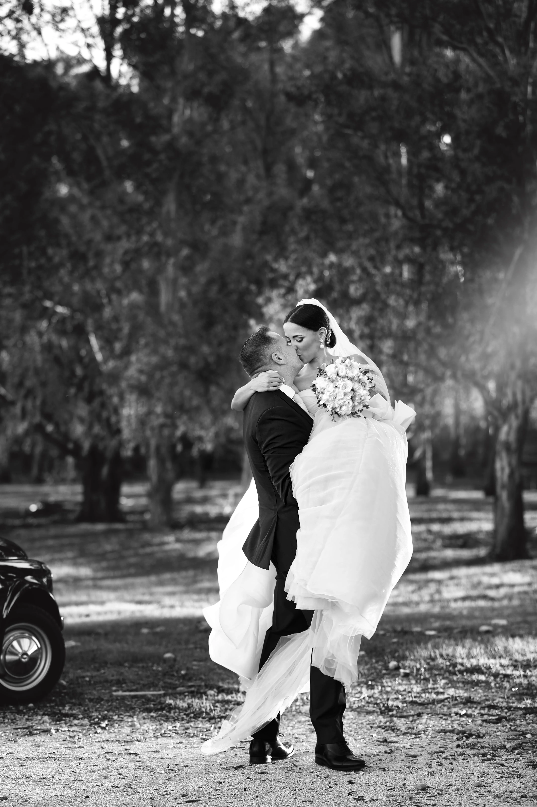
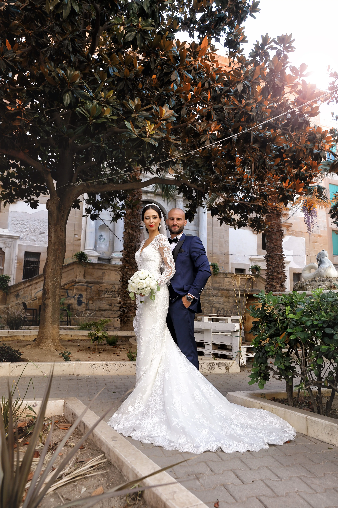
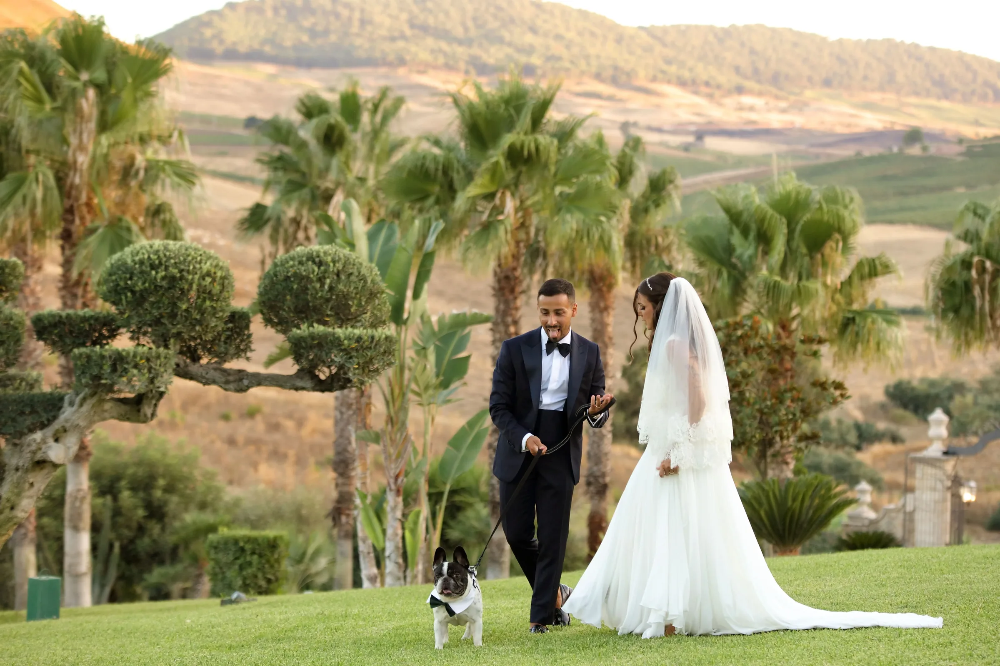
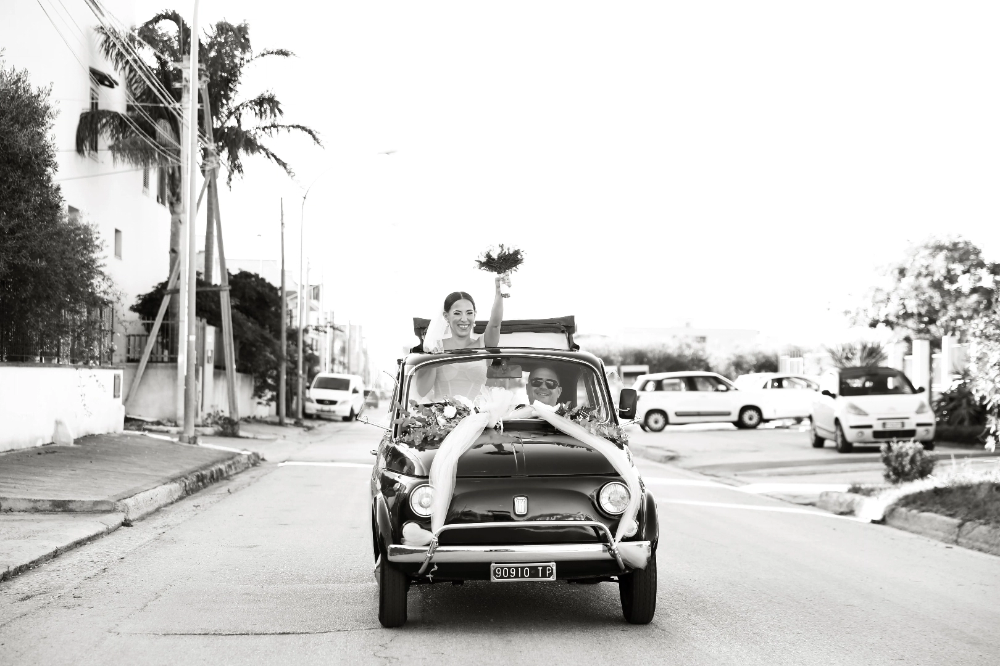
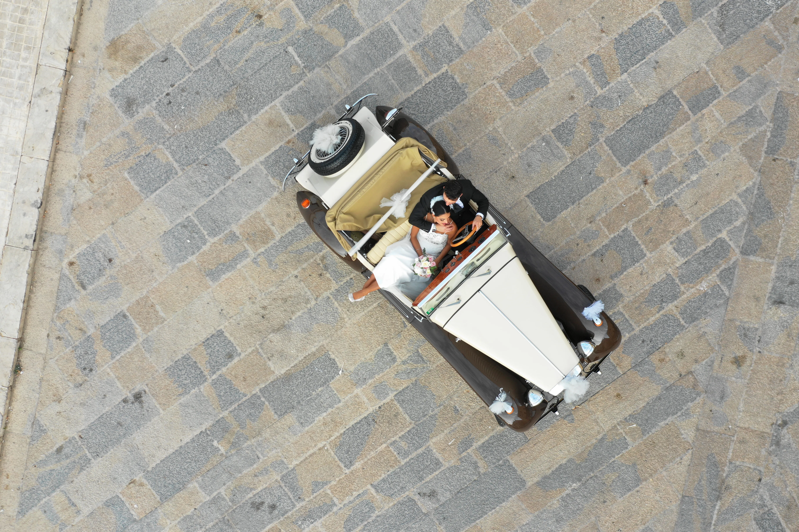
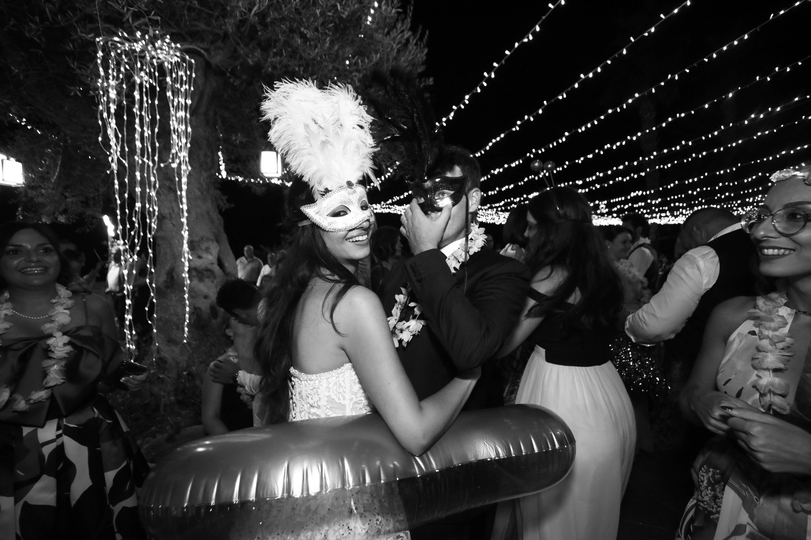

Reportage di nozze tradizionale, artistico e d'autore, dal 1953.
Non fermiamo il tempo.
Lo rendiamo indimenticabile.
Una selezione dei nostri servizi fotografici a Paceco e in provincia di Trapani.









